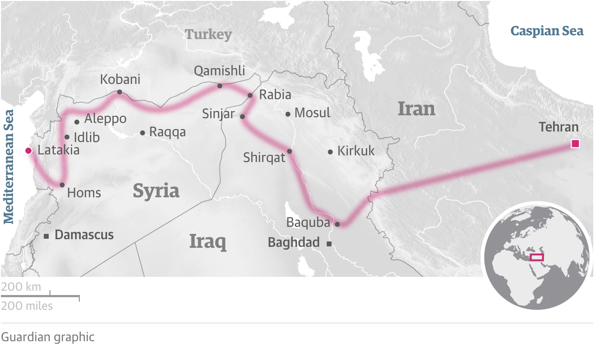

Something that has always interested me as it relates to foreign policy is the irrationality with which we view different threats to our nation. If you were to poll Americans on what our greatest long term threat in the middle east is, many of them would tell you that it is radical Islamic terrorism. While there is undoubtably a notable threat from this, it would be ludicrous to think that this form of terrorism poses the greatest threat to the US’ interest both at home and abroad. Instead, Americans should turn their attention towards geopolitical threats emanating from China, Russia, and Iran. A few weeks ago, I published a piece on Russia, and today we’re going to have a brief discussion about Iran’s quest for middle eastern dominance through the establishment of what is known as the “Shia Crescent”. This would have very real implications for the United States as well as our allies in the region, like Israel, Jordan, and Saudi Arabia. To be clear, Iran is full of moderates who seek a better relationship with the United States, so it is important not to pain with a broad brush here. Unfortunately however, Iranian foreign policy has often been shaped by leaders who want to oppose the West at every possible turn. There is a lot to discuss in this piece, as such, this piece will briefly discuss seven different contextual items. These items span from the history of the Iranian revolution, to the Syrian Civil War, the Arab Spring, and more. This is important, as it will help us see how these issues are all connected. Too often, we limit the scope of our research to current events, without seeing how these current events have been shaped by our history. That is why this piece will first provide necessary context before moving into the discussion about Iran’s “endgame”.
Iranian Revolution
We begin in 1953, they year the United States’ and United Kingdom’s plot to depose Mohammad Mosaddegh culminated in the toppling of his democratically elected regime. I know what you’re probably thinking “Hey man, the Iranian Revolution didn’t begin until the late 1970’s, you don’t know what you’re talking about”! But bare with me my scholarly friend, this is important! You see, the US and UK had a vested interest in trying to bring Iranian leadership closer to the West, so by toppling Mossadegh’s nationally popular, anti-western regime, they felt that they could put in a pro-western government that would allow western democracies to exert more influence in the region.
While many Iranians initially rejoiced in the regime change, there was a significant segment of the population who felt that the west had destroyed their democracy by putting a corrupted Monarch named Reza Pahlavi into power. Eventually, Iranians had grown so angry at the Western style reforms being enacted by Reza Pahlavi, that he and his family were forced to flee the country in the late 1970’s. This took Iran from being a Monarchy to a Theocratic Republic, in which one religious leader has complete power over the country. Hence, the Iranian Revolution was complete, and the Iran we know today was born.
Saudi Arabia
Saudi Arabia, which is predominantly made up of Sunni Muslims (as opposed to Shia Muslims in Iran) had long considered themselves to be the leaders of the Muslim world, since it’s two most sacred sights were within their borders. However, after the Iranian Revolution, Iran began to call itself the true leader of the Muslim world. This greatly concerned the government of Saudi Arabia, since they feared that their people would act similarly and topple the Westernized government of Saudi Arabia. This was exacerbated when it became apparent that the new Iranian government was supporting Shiite opposition groups in Saudi Arabia, Iraq and Afghanistan. As such, Saudi Arabia greatly strengthened their ties with the United States.
1980: Saddam Hussein Invades Iran
Almost immediately after the Iranian Revolution, Iraqi Dictator Saddam Hussein ordered the invasion of Iran. Simply put, Saddam Hussein sought to capitalize on the turbulence in Iran by capturing territory and oil fields that were within Iran’s borders. Seeing an opportunity, Saudi Arabia (and all other world powers) supported Kurdish and Sunni proxy groups in the fight against Iran. However, after eight years of intense fighting and nearly 1 million civilian deaths, the UN negotiated a ceasefire in which Iran was able to keep their territory. This further fractured the relationship between Iran and the West, and emboldened their hardline stances.
The United States’ War in Iraq
When the United States entered into a war against Saddam’s government, there was concern that the US had not adequately prepared for what to do after his regime fell. Upon Hussein’s capture, the United States made mistake after mistake and was unable to put in place a competent government. This lead to Sunni and Shia rebel groups rising to power and controlling large swaths of territory in the country in the absence of a strong centralized government. When the United States ended combat operations in Iraq, these groups were free to wage war on each other as they pleased, creating a significant power vacuum in which nobody was there fight back, this dynamic eventually lead to the rise of ISIS.
The Arab Spring and Syria
Many of us may remember the 2011 “Arab Spring”, in which a number of Muslim nations in north Africa and the middle east, took part in mass demonstrations against their governments. Discussing the Arab Spring in full detail would require a completely separate piece, but basically all you need to know is that many of the protests turned violent and lead to the toppling of several dictatorial regimes. Don’t believe me? Just ask Libya’s late dictator Moammar Gadhafi.
The focus for us however, will be the impact of the Arab Spring on Syria and their leader, Bashar Al-Assad. Understanding the dynamic in Syria will allow us to see how it all fits into Iran’s endgame, so pay attention!
During the 2011 protest, thousands of angry citizens took to the streets in Syria to protest their dictator, the aforementioned Assad. In response to these protests, Assad unleashed his military on his own people (far from the first or last time he would do so), and began executing protesters. By the summer of 2011, many members of Syria’s army defected from Assad and joined rebel groups intent on regime change. Soon after, the Syrian Kurds (a much oppressed faction of mostly Sunni Muslims inhabiting the areas shown in the map below) announced that they were no longer recognizing Bashar Al Assad as their leader, and formed another rebel group.
So, this left Syria’s civil war with four different sides: Syrian Rebels in the northwest, Kurdish Rebels in the northeast, The Assad Regime in the west, and ISIS, whose territory straddles (straddled) the border of central Syria and Northern Iraq. Confused yet? You should be, here is a map so you can visualize what we just discussed.
Iraqi Kurds Seek Independence
In September of 2017, the conflict in the Middle East was further complicated when the Northern Kurdish region of Iraq (refer to our first map) voted to secede from Iraq and form their own nation. As you can imagine, the government of Iraq did not take too kindly to this vote, and now the two sides are embroiled in an escalating conflict. It is worth noting that the Kurds have been one of the United States’ most reliable allies in the region, continually offering their support conflict-after-conflict. Recently however, the United States has signaled that they will no longer support the Kurds after ISIS has been defeated, and this is exactly what Iran wants.
Iran’s Proxies
You see, despite the long history of conflict between Iran has had with the US and Saudi Arabia, the two sides have never actually declared war on one another. Instead, they engage in what is known as “proxy warfare”, in which a government covertly supplies weapons, money, and other means of support to militias who fight in their interest. Of their proxies, the most notable is Hezbollah, a Shia militant group with footholds in the Lebanese government. Using funding and support from Iran, Hezbollah has attempted to launch a number of attacks directed towards Israel. Similar Shia proxies exist within the splintered borders of Iraq, and in Syria as well. All of which are supported by the Iranian government and fight for their interests. This is perhaps the most critical part of Iran’s Endgame, and now we can discuss why.
The Shia Crescent, Iran's Endgame
So far, you’ve gotten tidbits of information about a pretty broad range of subjects. Even though this makes for a little bit of extra reading, discussing Iran’s endgame would be impossible to discuss without it. What you must know, is that Iran’s endgame is to gain access to the Mediterranean Sea. Depicted in the photo above is what is known as the “Shia Crescent”. This crescent would be a homologous land bridge of territory dominated by Shia Muslims loyal to Iran. As you can see, this crescent spans from Iran’s capital of Tehran, through northern Iraq (where the Kurds reside), and then through Syria and Lebanon. This is why our discussion on the Kurds was important because this land bridge goes right through Kurdish territory. Now, Iran already has influence in Lebanon, so, the two remaining territories they must secure are northern Iraq and Syria. Here is a photo of the specific route:
In a previous section, we briefly touched on how the Kurdish province of Iraq, whose territory is encompassed by this crescent, is currently at odds with their government. So, since the United States has signaled that they will seemingly pack up after they can credibly claim they’ve defeated ISIS, there is now no larger power backing the embattled Kurds. This is of significant importance and should not be overlooked. If Iran is able to muscle the Kurds from their territory and build this land bridge to the Mediterranean, there will be consequences that younger generations of Americans will have to pay.
In short, that is Iran’s plan. With a windfall of funding from the “Iranian Nuclear Deal”, there is a great possibility that if and when the United States reneges on their promises to middle eastern allies, that Iran will have considerably more influence in the region than pro-western, democratic forces. In turn, this will lead to Russia having more influence in the region as well, especially when you consider how the two countries have become strong partners of late. Once again, American politics is plagued by short-sightedness, this has been a recurring theme of many of my pieces. As a new generation of Americans slowly rises in the ranks of leadership, it will be critical to begin considering the long-term effects of our foreign policy decisions.